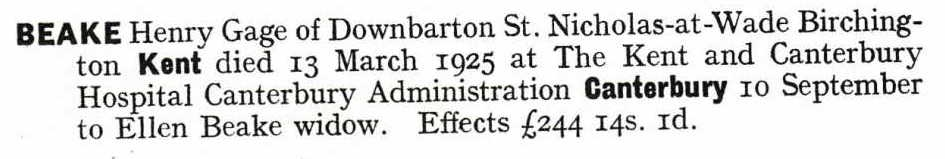
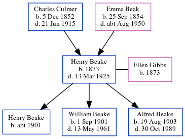

Henry Gage Beake 1873 - 1925
[ Home ] | [ Calendar ] | [ Surnames Index ] | [ Errors ] | [ Family History ]A waggoner on a farm and horseman and the child of Charles Culmer (an agricultural labourer) and Emma Beak, Henry Beake, the first cousin twice-removed on the mother's side of Nigel Horne, was born in Preston, Wingham, Kent, England in 18731,2,3, was baptised there on 19 Jan 1873 and married Ellen Gibbs (with whom he had 3 children: Henry C, William Gage Edmund and Alfred Willoughby John) in St Nicholas-at-Wade, Kent, England on 22 Oct 18985.
During his life, he was living at 3 Serene Place, Broadstairs, Kent on 31 Mar 19011; at Hale Cottages, The Street in St Nicholas-at-Wade on 2 Apr 19116; and at Down Barton Farm in St Nicholas-at-Wade on 19 Jun 19217 and in 1925. In 1921 he was working at William Smith Farmer.
He died on 13 Mar 1925 in Canterbury, Kent, England2,4.
Parents
- Charles was born on 5 Dec 1852
- Emma was born on 25 Sept 1854
Children
- Henry C was born c. 1901
- William Gage Edmund was born on 1 Sept 1901
- Alfred Willoughby John was born on 19 Aug 1903
Citations
- 1901 England, Wales & Scotland Census - Findmypast (was age 28 and the head of the household)
- England & Wales deaths 1837-2007 - Findmypast
- Kent, Canterbury Archdeaconry marriages 1538-1928 - Findmypast
- England & Wales Government Probate Death Index 1858-2019 - Findmypast
- Kent, Canterbury Archdeaconry marriages 1538-1928 - Findmypast
- 1911 Census for England & Wales - Findmypast (was age 38 and the head of the household)
- 1921 Census Of England & Wales - Findmypast (was age 48 and the head of the household)
Media
Henry Gage Beake - probate

England & Wales deaths 1837-2007 - BMD/D/1925/1/AZ/000067/071
Kent, Canterbury Archdeaconry marriages 1538-1928 - GBPRS/CANT/M/97245691/1
England & Wales marriages 1837-2008 - BMD/M/1898/4/AZ/000027/375
1911 Census for England & Wales - GBC/1911/RG14/04478/0101/1
England & Wales Government Probate Death Index 1858-2019 - GBOR/GOVPROBATE/C/1925-1925/00005630
1901 England, Wales & Scotland Census - GBC-1901-0007464495
Family Tree
Map
Generated by ged2site. Last updated on Jul 3, 2024
Known Issues
Parent Charles is listed in the residence for 3 Apr 1881, but this child is not
Parent Emma is listed in the residence for 3 Apr 1881, but this child is not
Surname is different from both parents
Date of baptism (19 Jan 1873) before date of birth (1873)
Residence record for 1925 contains no citation
Listed in the residence for 1925, but spouse Ellen Gibbs is not
No records of living with anyone
Location for "employment" on 1921 is empty